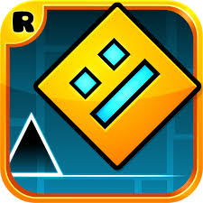

Geometry Dash is a 2D game that should be deleted. Please quit this game from now right away. The developer of this game, RobTop, is too lazy that he doesn't work for updates at all. How stupid.. Also the users of this game is just crazy. They don't care about newbies at all! If someone starts playing this game, I'm sure he will quit this game after at most 1 week. What the hell..
For example, take note of 'pointercrate.com'. In this site, you can see top 150 hardest levels in Geometry Dash. But 99% of people can reach not even 10% of these levels. It's just crazy. Only a few top people can beat it, but Ironically, most people want to 'see(not play)' more hardest levels.. so creaters are just keeping making harder and harder levels.